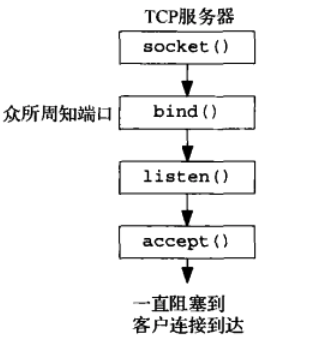

源码地址https://github.com/zhuangqh/anywhere
看到像这个给tinyhttpd写README的仓库都有1k star的时候，我真的好气🙄，所以我也写一个用c写HTTP静态文件服务器的教程，而且性能更好。
c socket编程面向的是传输层。我们在这一层上来收发HTTP报文。
HTTP请求报文格式如下：

由于我们是静态文件服务器，所以有效的请求报文是 GET url 的格式。我们只要解析这个url，然后发送对应的文件就OK了。这个是基本的思路。
函数包装
我仿照UNP中对函数进行包装的方式。对基础函数进行包装，在代码中只使用包装过的函数。
UNIX函数大多会将函数的调用状态作为返回值。如Socket函数，如果返回值小于零，则是调用出错，这种情况我们直接结束进程并报错。
int
Socket(int family, int type, int protocol)
{
int n;
if ( (n = socket(family, type, protocol)) < 0)
err_sys("socket error");
return(n);
}
监听并处理请求

服务器启动并监听的流程是这样的：首先调用socket()创建一个服务端的套接字，然后使用bind()将套接字绑定在一个指定的端口上。调用listen()将套接字从CLOSED状态转换到LISTEN状态。而accept会返回已连接队列的对头。我们对accept返回的描述符的读写就是对客户端的收发操作。
这篇教程选用的并发模型是线程池，每个线程分别accept的形式。
ReqHandler这个struct存放的是对客户端描述符的处理函数和在pthread_t数组的下标。下标用于后面的pthread_create
主进程在创建完线程后任务就完成了，所以它一直阻塞等待就好。
tptr = Calloc(THREAD_NUM, sizeof(pthread_t));
// tptr是一个pthread_t的数组。在启动的时候可给出线程池线程的数量，不指明则使用默认值8。
ReqHandler rh;
rh.handler = accept_request;
for (int i = 0; i < nthreads; i++) {
rh.index = i;
thread_make(rh);
}
for ( ; ; )
pause(); // everything done by threads
在线程创建时，将ReqHandler里的请求处理函数传递给它
Pthread_create(&tptr[rh.index], NULL, &thread_main, (void *) (rh.handler));
在各个线程中分别accept，这个有个问题，他们不应该同时accept。所以我们在进入accept这个函数前加上互斥锁。
Pthread_mutex_lock(&mmlock);
connfd = Accept(listenfd, cliaddr, &clilen);
Pthread_mutex_unlock(&mmlock);
处理请求
在服务器搭起来之后，我们就可以干正事了。accept_request这个函数解析出HTTP的请求方法和URL并作出响应。
我们知道HTTP的每一行是以/r/n结束，那么getline该怎么做呢？一个字符一个字符地读，并逐一判断是否为/r/n序列的方法显然比较慢。所以我们做一个自己的缓冲区。预先在客户端描述符connfd读入多个字符。再在缓冲区里一个字符一个字符地判断。缓冲区读完后，再读一次connfd。这样能大大减少读取connfd的次数。
请求方法错误处理
获取到HTTP的请求方法后，如果方法不是GET，我们直接返回501错误。说明这个方法我们还没有实现。
可能有人会对下面这种写法感到疑惑。其实编译器在做预处理的时候会把连着的字符串合并的。所以下面这种写法跟写在一对双引号里是一样的。
void
unimplemented(int sockfd)
{
char msg[] =
"HTTP/1.1 501 Method Not Implemented\r\n"
SERVER_STRING
"Content-Type: text/plain\r\n"
"\r\n"
"method not implemented\r\n";
Write(sockfd, msg, strlen(msg));
}
请求文件不存在处理
然后判断URL的文件是否存在。这里我们多做了一步处理，如果URL是以/结尾的，浏览器会自动给它加上index.html，所以我们也按照这个来。
我们用open的形式打开文件，而不是标准IO的fopen。open能拿到该文件的描述符。这在我们下一步传输文件时比较方便。如果文件不存在，直接返回404。
void
serve_file(int sockfd, const char *filepath)
{
int filefd = open(filepath, O_RDONLY); // open file for read
if (filefd == -1) {
not_found(sockfd);
} else {
set_header(sockfd, filepath);
send_file(sockfd, filefd);
Close(filefd);
}
}
传输文件
向客户端发送文件，还得设置好响应报文中Content-Type的值，告诉对方这是一个什么文件。这里我们需要一张表，根据文件的后缀名查询Content-Type。自然是使用Hash表，冲突用链表的形式解决。具体请看源码。
传输文件时，就是一对read write，UNIX一切皆文件的优雅就此体现。
void
send_file(int sockfd, int filefd)
{
char buf[MAXLINE];
int cnt = 0;
while ((cnt = read(filefd, buf, MAXLINE)) > 0) {
Write(sockfd, buf, cnt);
}
}
具体代码请查看文章开头的github地址，我把要点和整体思路讲完，剩下就是看代码了🙃